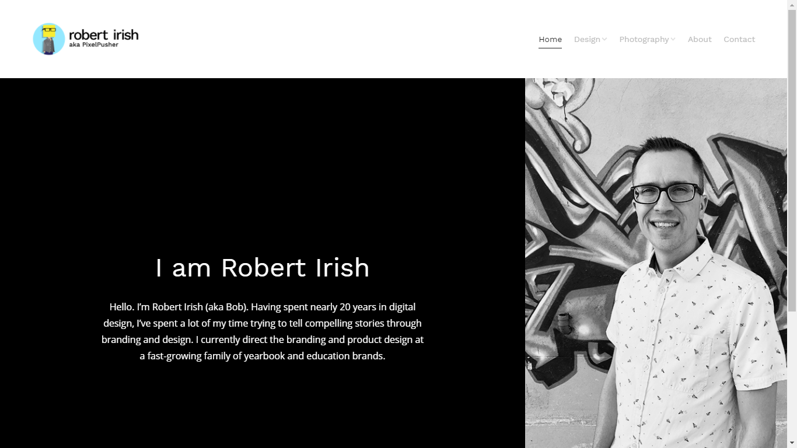
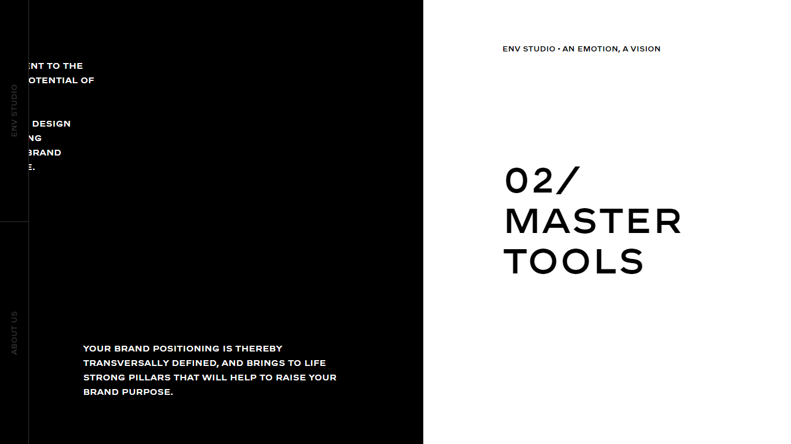
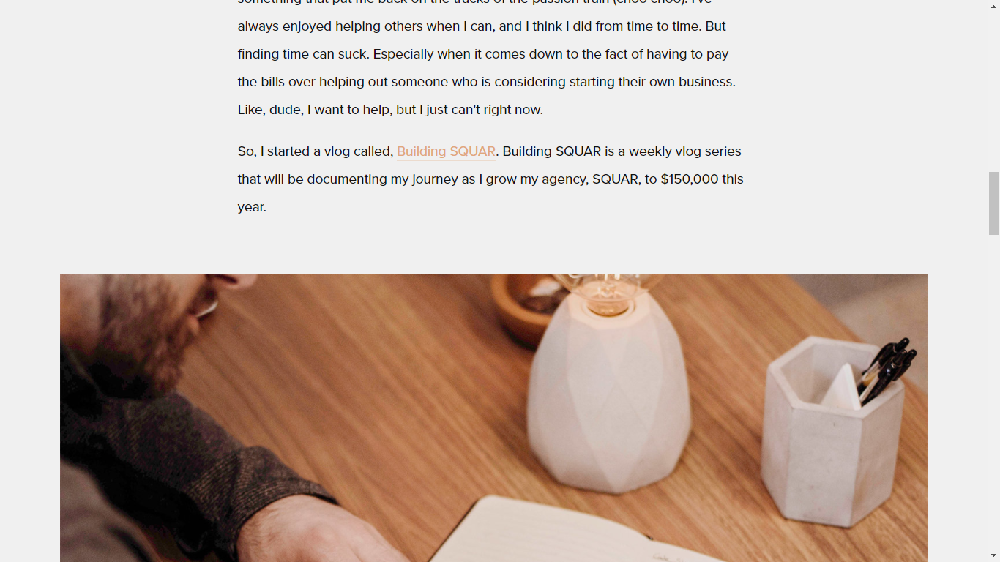

Although i made most of this website by my own knowledge, i looked into few website for design inspiration. Following are the websites with description about what components, from other sites, i chose to implement on my own.
Navigation bar
From this site, I took the idea of navigation button with border merely at the bottom, and then I decided to make the background of navigation bar transparent. Furthermore, I added the fonts linked to social media sites like facebook, Instagram etc. to enhance the look of the navigation bar.
Theme
The concept of black and white theme in my website comes from this site. Although my website is not split into white and black like shown in the picture, but it is mostly made up of black and white colors.
Blog
I looked at this site, to brainstorm ideas about blog section. I applied almost similar layout to my website with different font. Also, at the bottom of the page, I added a little section of recent posts, to make the page look more realistic.
Logo
This site gave me the idea about putting a logo in my website. It’s a simple logo with just the initials of the name of the site’s owner. I designed my logo with the same concept, I took the initials of my name and played with it a little bit on the adobe illustrator. Sticking with the same theme I mention before, I used black and white logos for my website.